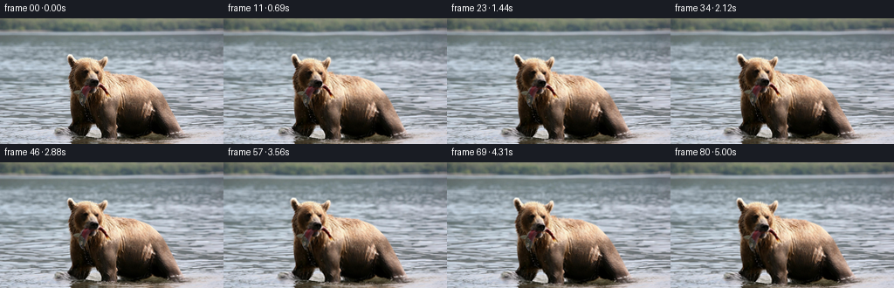
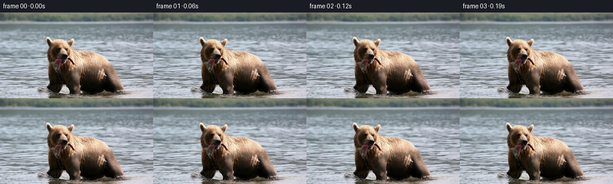

← 本轮 smoke 总览traex/GPT-5.6-Sol · 0872_s3
text · 256×144 · 16 FPS · 81 帧 · 状态 running · 输出 tokens None
原始任务a brown bear in the water with a fish in its mouth
当前保存结果
此结果可播放，但该运行尚未通过最终提交审核。页面展示不代表评测通过。
已保存候选与代码修改
这里按时间展示外部捕获的候选，每份均可单独播放。保存新版本不等于完成视觉检查；下方工具证据记录实际看过的图。
候选 01 · 2026-11-08T21:06:37.878302+00:00 · 点开播放与检查图
inspection.png

transition_check.png

代码变化
--- 上一保存版本
+++ 本次保存版本
@@ -0,0 +1,117 @@
+from pathlib import Path
+import cv2
+import numpy as np
+from PIL import Image
+import artifact_io
+
+# Deterministic, image-derived animation: a slow living-camera shot with an
+# independently bobbing bear, a small flexible motion at the exposed fish,
+# and several scales of water refraction.
+CASE_DIR = Path(__file__).resolve().parent
+W, H, N = 256, 144, 81
+
+
+def smoothstep(a, b, x):
+ z = np.clip((x-a)/(b-a), 0.0, 1.0)
+ return z*z*(3.0-2.0*z)
+
+
+def ellipse_soft(X, Y, cx, cy, rx, ry, feather):
+ d = np.sqrt(((X-cx)/rx)**2 + ((Y-cy)/ry)**2)
+ return 1.0 - smoothstep(1.0-feather, 1.0, d)
+
+
+def make_masks(rgb):
+ r, g, b = [rgb[...,i].astype(np.int16) for i in range(3)]
+ # The animal is the large connected warm-colored subject. Fill that
+ # component so that dark eyes, nose, and wet-fur shadows remain attached.
+ warm = ((r > b+9) & (r > g+2)).astype(np.uint8)
+ count, labels, stats, _ = cv2.connectedComponentsWithStats(warm, 8)
+ main = 1 + int(np.argmax(stats[1:, cv2.CC_STAT_AREA]))
+ seed = (labels == main).astype(np.uint8) * 255
+ contours, _ = cv2.findContours(seed, cv2.RETR_EXTERNAL, cv2.CHAIN_APPROX_SIMPLE)
+ filled = np.zeros_like(seed)
+ cv2.drawContours(filled, contours, -1, 255, cv2.FILLED)
+ # A modest closing joins wet highlights without swallowing the surrounding water.
+ filled = cv2.morphologyEx(filled, cv2.MORPH_CLOSE,
+ cv2.getStructuringElement(cv2.MORPH_ELLIPSE, (9,9)))
+ animal = cv2.GaussianBlur(filled.astype(np.float32)/255.0, (0,0), 3.2)
+ animal = np.clip(animal, 0, 1)
+ return animal
+
+
+def generate():
+ source = np.asarray(Image.open(CASE_DIR/'first_frame.png').convert('RGB'), dtype=np.uint8)
+ assert source.shape == (H,W,3)
+ animal = make_masks(source)
+ Y, X = np.mgrid[0:H, 0:W].astype(np.float32)
+
+ # Geometrical support keeps motion restricted to the visible close-up bear.
+ animal *= np.clip(ellipse_soft(X,Y,139,99,82,72,.18) +
+ .7*ellipse_soft(X,Y,104,68,42,34,.24), 0, 1)
+ water = np.clip(1.0 - cv2.GaussianBlur(animal,(0,0),4.0), 0, 1)
+ # The lower-left sliver crossing the muzzle is where the fish projects from
+ # the bear's mouth. The gentle flex is deliberately sub-pixel at its root.
+ fish_support = ellipse_soft(X,Y,86,130,33,14,.38)
+ fish_tip = np.clip((112-X)/48.0, 0, 1) * fish_support
+
+ srcf = source.astype(np.float32)
+ frames = []
+ for i in range(N):
+ if i == 0:
+ frames.append(source.copy())
+ continue
+ sec = i / 16.0
+ # Slow, nearly imperceptible documentary push-in. It starts continuously.
+ z = 1.0 + 0.0105 * smoothstep(0, 1, i/(N-1))
+ cx, cy = 132.0, 83.0
+ mx = cx + (X-cx)/z
+ my = cy + (Y-cy)/z
+
+ # Bear rises and settles in the water. A minute horizontal sway and rotation
+ # keep the head coherent rather than making it look like a flat translation.
+ phase_b = 2*np.pi*sec/3.9
+ bob = 1.35*np.sin(phase_b)
+ sway = 0.42*np.sin(2*np.pi*sec/5.4)
+ angle = np.deg2rad(0.24*np.sin(2*np.pi*sec/4.7))
+ ox, oy = X-132.0, Y-91.0
+ # Inverse of a tiny local rotation plus translation.
+ bdx = sway + (-angle*oy)
+ bdy = bob + ( angle*ox)
+ mx -= animal*bdx
+ my -= animal*bdy
+
+ # Water refraction at two wavelengths. Subtracting each wave's t=0 state
+ # guarantees no initial jump; amplitudes remain low enough to retain detail.
+ ph1 = 2*np.pi*sec/2.8
+ ph2 = 2*np.pi*sec/1.65
+ wx = (0.62*(np.sin(X*.105 + Y*.022 - ph1)-np.sin(X*.105 + Y*.022)) +
+ 0.27*(np.sin(X*.235 - Y*.037 + ph2)-np.sin(X*.235 - Y*.037)))
+ wy = 0.24*(np.sin(X*.074 + Y*.19 - ph2)-np.sin(X*.074 + Y*.19))
+ mx -= water*wx
+ my -= water*wy
+
+ # A restrained fish-tail flex (about one pixel maximum), fixed at the mouth.
+ flex = 0.82*np.sin(2*np.pi*sec/1.18) * fish_tip
+ my -= flex
+ mx -= 0.20*np.sin(2*np.pi*sec/1.18 + .8) * fish_tip * np.sin(np.pi*sec/1.18)
+
+ frame = cv2.remap(source, mx.astype(np.float32), my.astype(np.float32),
+ cv2.INTER_CUBIC, borderMode=cv2.BORDER_REFLECT_101)
+
+ # Moving water glints: low-amplitude luminance modulation, excluded from fur.
+ shimmer = (np.sin(X*.16 + Y*.035 - ph1) - np.sin(X*.16 + Y*.035))
+ shimmer += .45*(np.sin(X*.31 - Y*.08 + ph2)-np.sin(X*.31-Y*.08))
+ lum = (0.75*shimmer*water)[...,None]
+ frame = np.clip(frame.astype(np.float32) + lum, 0, 255).astype(np.uint8)
+ frames.append(frame)
+
+ out = np.stack(frames).astype(np.uint8)
+ # Contract invariant.
+ out[0] = source
+ artifact_io.save(out, CASE_DIR)
+ return out
+
+
+if __name__ == '__main__':
+ generate()
可观测工具行为
命令 1 · 2026-11-08T21:04:47.263123+00:00/bin/bash -lc "cat GENERATION_RULES.md && printf '\\n--- PROMPT ---\\n' && cat prompt.txt"
exit 0 命令 2 · 2026-11-08T21:04:47.526491+00:00/bin/bash -lc "find . -maxdepth 2 -type f -printf '%p %s bytes\\n' | sort && file first_frame.png && python3 - <<'PY'
from PIL import Image
im=Image.open('first_frame.png')
print(im.mode, im.size)
PY"exit 127 命令 3 · 2026-11-08T21:04:56.640177+00:00/bin/bash -lc "cat task_spec.json; sed -n '1,240p' artifact_io.py"
exit 0 命令 4 · 2026-11-08T21:04:57.802822+00:00/bin/bash -lc "python3 - <<'PY'
from PIL import Image
import numpy as np
im=np.array(Image.open('first_frame.png').convert('RGB'))
print('shape',im.shape,'dtype',im.dtype)
print('channels min/max/mean/std',[(int(im[...,c].min()),int(im[...,c].max()),round(float(im[...,c].mean()),2),round(float(im[...,c].std()),2)) for c in range(3)])
# 8x8 cell means and dominant cluster index using kmeans
from scipy.cluster.vq import kmeans2
x=im.reshape(-1,3).astype(float)
cent,lab=kmeans2(x,10,minit='++',iter=30,seed=2)
order=np.argsort(cent.mean(1)); mp=np.zeros(10,int);mp[order]=np.arange(10)
print('centers dark->light',np.round(cent[order]).astype(int).tolist())
print('counts',np.bincount(mp[lab],minlength=10).tolist())
L=mp[lab].reshape(im.shape[:2])
for y in range(0,144,6):
print(''.join('0123456789'[int(np.bincount(L[y:y+6,x:x+4].ravel(),minlength=10).argmax())] for x in range(0,256,4)))
PY"exit 0 命令 5 · 2026-11-08T21:05:11.090667+00:00/bin/bash -lc "python3 - <<'PY'
import cv2, numpy as np
from PIL import Image
im=np.array(Image.open('first_frame.png').convert('RGB'))
R,G,B=im.transpose(2,0,1); mx=im.max(2);mn=im.min(2)
conds={
'warm':(R>B+10)&(R>G+3),
'brown':(R>B+15)&(G>B+5),
'dark':im.mean(2)<80,
'darkwarm':(im.mean(2)<110)&(R>=B),
'brightwarm':(R>170)&(R>B+15),
}
for n,m in conds.items():
nlab,lab,stats,cens=cv2.connectedComponentsWithStats(m.astype('uint8'),8)
ids=np.argsort(stats[1:,4])[::-1][:12]+1
print('\\n',n,'pixels',m.sum())
for i in ids: print(stats[i].tolist(),np.round(cens[i],1).tolist())
# region stats grid 16x12
for yy in range(0,144,12):
s=''
for xx in range(0,256,16):
p=im[yy:yy+12,xx:xx+16]
r,g,b=p.reshape(-1,3).mean(0)
# warm ratio, dark ratio
w=((p[...,0]>p[...,2]+10)&(p[...,0]>p[...,1]+3)).mean()
d=(p.mean(2)<80).mean()
s+= ' %3d/%2d/%2d'%(p.mean(),w*99,d*99)
print(yy,s)
PY"exit 0 命令 6 · 2026-11-08T21:05:21.108690+00:00/bin/bash -lc "python3 - <<'PY'
from PIL import Image
import numpy as np
im=np.array(Image.open('first_frame.png').convert('RGB'))
for y in range(0,144,4):
s=''
for x in range(0,256,4):
p=im[y:y+4,x:x+4].reshape(-1,3).mean(0); m=p.mean();r,g,b=p
if r>b+15 and g>b+5: c='B' if m>145 else ('d' if m<75 else 'b')
elif m<75:c='X'
elif r>b+8:c='w'
elif b>r+8:c='~'
else:c='.'
s+=c
print(f'{y:03} {s}')
PY"exit 0 命令 7 · 2026-11-08T21:05:37.144520+00:00/bin/bash -lc "python3 - <<'PY'
from PIL import Image
import numpy as np
im=np.array(Image.open('first_frame.png').convert('RGB'))
# print roi each char 2x2 according luminance, color: warm upper/lowercase, neutral shades
chars=' .:-=+*#%@'
for y in range(36,144,2):
s=''
for x in range(64,224,2):
p=im[y:y+2,x:x+2].reshape(-1,3).mean(0); lum=p.mean(); idx=min(9,int(lum/256*10)); r,g,b=p
c=chars[idx]
if r>b+12 and r>g+2:
c=c.upper() if c.isalpha() else ('W' if lum>185 else 'b' if lum>115 else 'd' if lum>60 else 'x')
elif b>r+10:
c='~' if lum>125 else '"'^'"'
s+=c
print(f'{y:03} {s}')
PY"exit 0 命令 8 · 2026-11-08T21:05:48.373345+00:00/bin/bash -lc "python3 - <<'PY'
import cv2, numpy as np
from PIL import Image
im=np.array(Image.open('first_frame.png').convert('RGB'));R,G,B=im.transpose(2,0,1)
w=(R>B+10)&(R>G+3)
# select comp largest at ROI
n,l,st,c=cv2.connectedComponentsWithStats(w.astype(np.uint8),8); m=l==1+np.argmax(st[1:,4])
for y in range(144):
xs=np.where(m[y])[0]
if len(xs): print(y,len(xs),xs.min(),xs.max())
PY"exit 0 命令 9 · 2026-11-08T21:06:35.075893+00:00/bin/bash -lc "cat > generate.py <<'PY'
from pathlib import Path
import cv2
import numpy as np
from PIL import Image
import artifact_io
# Deterministic, image-derived animation: a slow living-camera shot with an
# independently bobbing bear, a small flexible motion at the exposed fish,
# and several scales of water refraction.
CASE_DIR = Path(__file__).resolve().parent
W, H, N = 256, 144, 81
def smoothstep(a, b, x):
z = np.clip((x-a)/(b-a), 0.0, 1.0)
return z*z*(3.0-2.0*z)
def ellipse_soft(X, Y, cx, cy, rx, ry, feather):
d = np.sqrt(((X-cx)/rx)**2 + ((Y-cy)/ry)**2)
return 1.0 - smoothstep(1.0-feather, 1.0, d)
def make_masks(rgb):
r, g, b = [rgb[...,i].astype(np.int16) for i in range(3)]
# The animal is the large connected warm-colored subject. Fill that
# component so that dark eyes, nose, and wet-fur shadows remain attached.
warm = ((r > b+9) & (r > g+2)).astype(np.uint8)
count, labels, stats, _ = cv2.connectedComponentsWithStats(warm, 8)
main = 1 + int(np.argmax(stats[1:, cv2.CC_STAT_AREA]))
seed = (labels == main).astype(np.uint8) * 255
contours, _ = cv2.findContours(seed, cv2.RETR_EXTERNAL, cv2.CHAIN_APPROX_SIMPLE)
filled = np.zeros_like(seed)
cv2.drawContours(filled, contours, -1, 255, cv2.FILLED)
# A modest closing joins wet highlights without swallowing the surrounding water.
filled = cv2.morphologyEx(filled, cv2.MORPH_CLOSE,
cv2.getStructuringElement(cv2.MORPH_ELLIPSE, (9,9)))
animal = cv2.GaussianBlur(filled.astype(np.float32)/255.0, (0,0), 3.2)
animal = np.clip(animal, 0, 1)
return animal
def generate():
source = np.asarray(Image.open(CASE_DIR/'first_frame.png').convert('RGB'), dtype=np.uint8)
assert source.shape == (H,W,3)
animal = make_masks(source)
Y, X = np.mgrid[0:H, 0:W].astype(np.float32)
# Geometrical support keeps motion restricted to the visible close-up bear.
animal *= np.clip(ellipse_soft(X,Y,139,99,82,72,.18) +
.7*ellipse_soft(X,Y,104,68,42,34,.24), 0, 1)
water = np.clip(1.0 - cv2.GaussianBlur(animal,(0,0),4.0), 0, 1)
# The lower-left sliver crossing the muzzle is where the fish projects from
# the bear's mouth. The gentle flex is deliberately sub-pixel at its root.
fish_support = ellipse_soft(X,Y,86,130,33,14,.38)
fish_tip = np.clip((112-X)/48.0, 0, 1) * fish_support
srcf = source.astype(np.float32)
frames = []
for i in range(N):
if i == 0:
frames.append(source.copy())
continue
sec = i / 16.0
# Slow, nearly imperceptible documentary push-in. It starts continuously.
z = 1.0 + 0.0105 * smoothstep(0, 1, i/(N-1))
cx, cy = 132.0, 83.0
mx = cx + (X-cx)/z
my = cy + (Y-cy)/z
# Bear rises and settles in the water. A minute horizontal sway and rotation
# keep the head coherent rather than making it look like a flat translation.
phase_b = 2*np.pi*sec/3.9
bob = 1.35*np.sin(phase_b)
sway = 0.42*np.sin(2*np.pi*sec/5.4)
angle = np.deg2rad(0.24*np.sin(2*np.pi*sec/4.7))
ox, oy = X-132.0, Y-91.0
# Inverse of a tiny local rotation plus translation.
bdx = sway + (-angle*oy)
bdy = bob + ( angle*ox)
mx -= animal*bdx
my -= animal*bdy
# Water refraction at two wavelengths. Subtracting each wave's t=0 state
# guarantees no initial jump; amplitudes remain low enough to retain detail.
ph1 = 2*np.pi*sec/2.8
ph2 = 2*np.pi*sec/1.65
wx = (0.62*(np.sin(X*.105 + Y*.022 - ph1)-np.sin(X*.105 + Y*.022)) +
0.27*(np.sin(X*.235 - Y*.037 + ph2)-np.sin(X*.235 - Y*.037)))
wy = 0.24*(np.sin(X*.074 + Y*.19 - ph2)-np.sin(X*.074 + Y*.19))
mx -= water*wx
my -= water*wy
# A restrained fish-tail flex (about one pixel maximum), fixed at the mouth.
flex = 0.82*np.sin(2*np.pi*sec/1.18) * fish_tip
my -= flex
mx -= 0.20*np.sin(2*np.pi*sec/1.18 + .8) * fish_tip * np.sin(np.pi*sec/1.18)
frame = cv2.remap(source, mx.astype(np.float32), my.astype(np.float32),
cv2.INTER_CUBIC, borderMode=cv2.BORDER_REFLECT_101)
# Moving water glints: low-amplitude luminance modulation, excluded from fur.
shimmer = (np.sin(X*.16 + Y*.035 - ph1) - np.sin(X*.16 + Y*.035))
shimmer += .45*(np.sin(X*.31 - Y*.08 + ph2)-np.sin(X*.31-Y*.08))
lum = (0.75*shimmer*water)[...,None]
frame = np.clip(frame.astype(np.float32) + lum, 0, 255).astype(np.uint8)
frames.append(frame)
out = np.stack(frames).astype(np.uint8)
# Contract invariant.
out[0] = source
artifact_io.save(out, CASE_DIR)
return out
if __name__ == '__main__':
generate()
PY
python3 generate.py
python3 - <<'PY'
import numpy as np
from PIL import Image
p=np.load('pixels.npz')['pixels']
print('pixels',p.shape,p.dtype)
a=np.array(Image.open('first_frame.png').convert('RGB'))
b=np.array(Image.open('frames/00.png').convert('RGB'))
print('first identical',np.array_equal(a,b))
for i in [1,10,20,40,60,80]:
x=np.array(Image.open(f'frames/{i:02d}.png'))
d=np.abs(x.astype(int)-a.astype(int))
print(i,'MAD',round(d.mean(),3),'changed',round((d.max(2)>2).mean(),3),'max',d.max())
PY"exit 0 命令 10 · 2026-11-08T21:06:51.498068+00:00/bin/bash -lc "python3 - <<'PY'
from PIL import Image
import numpy as np, cv2
f=np.stack([np.array(Image.open(f'frames/{i:02d}.png')) for i in range(81)])
d=np.abs(np.diff(f.astype(np.int16),axis=0))
mad=d.mean((1,2,3)); change=(d.max(3)>2).mean((1,2))
print('adj MAD min/mean/max',mad.min(),mad.mean(),mad.max(),'at',mad.argmax()+1)
print('adj changed min/mean/max',change.min(),change.mean(),change.max())
print('percentile abs channel delta',np.percentile(d,[50,75,90,95,99,99.9]).tolist())
# edge/high freq energy stability
for i in [0,1,20,40,60,80]:
g=cv2.cvtColor(f[i],cv2.COLOR_RGB2GRAY)
print(i,'mean/std',g.mean(),g.std(),'lap',cv2.Laplacian(g,cv2.CV_32F).var())
PY
ls -lh pixels.npz inspection.png index.html | cat"exit 0 保存候选 1 份；完成命令 10 次；可验证图片返回 0 张。原始 API 响应与完整日志保留在本地。